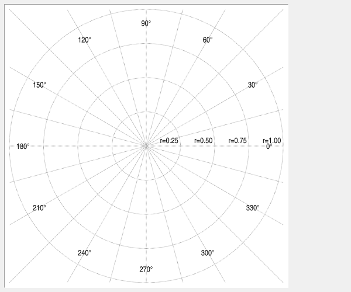
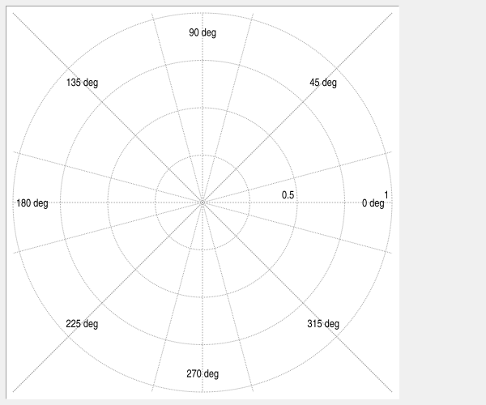
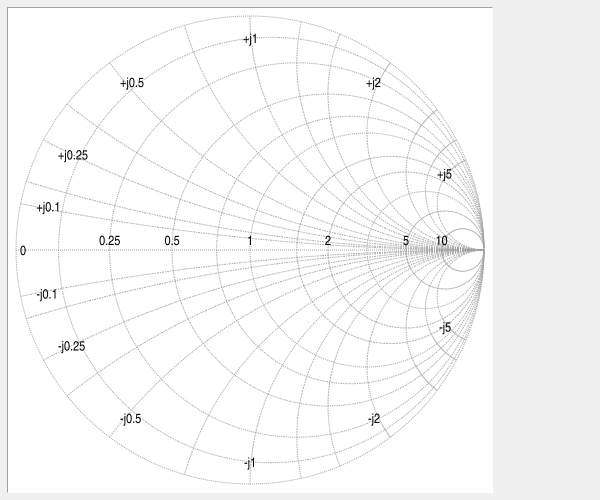
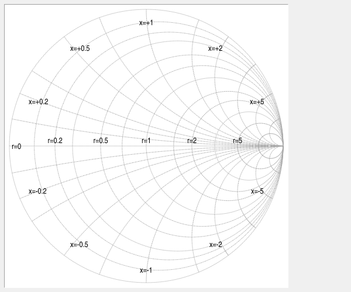
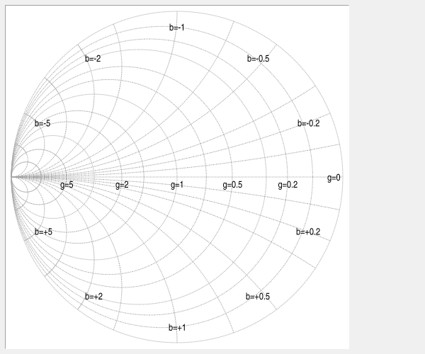

Graph grid GRID command
Commands in this namespace document the graph grid.
GRID is used below as a placeholder for:
GRAPHINST grid
On Cartesian graphs, the grid draws horizontal and vertical lines at axis tick positions. On polar widgets, it controls the Polar/Smith contours, tick lists, label placement, and label formatters.
For example:
graph .g
.g grid configure -hide no -color grey70 -dashes dot
The grid is a single component of an ordinary graph. Unlike elements, markers, or pens, there are no named grid objects. A ::rbc::TRACKGRAPH can additionally configure an independent grid for each track using track grid. Tracks initially inherit the graph-wide settings. Local grids support the seven Cartesian options below; Polar/Smith options are not available through the track interface.
The grid follows the graph’s -renderer and -antialias settings. Cairo preserves its axis mappings,
major/minor tick selection, dash pattern, and color. A zero -linewidth remains a one-pixel hairline. Grid
labels and all other text remain native.
Grid axes
-mapx and -mapy select the axes whose tick positions are used to generate the grid.
-mapx controls the vertical grid lines:
.g grid configure -mapx x
-mapy controls the horizontal grid lines:
.g grid configure -mapy y
Either mapping may be empty to disable grid lines for that direction:
.g grid configure -mapx {}
This is especially useful for bar charts, where the default grid uses only the Y axis.
The axis names refer to graph axes documented by AXIS.
Major and minor grid lines
Grid lines normally follow both major and minor axis ticks.
The -minor option controls whether lines are also drawn at minor tick positions:
.g grid configure -minor no
With -minor no, only major tick positions generate grid lines. With -minor yes, minor tick positions are
included as well.
The number and spacing of the grid lines therefore depend on the tick configuration of the mapped axes.
Showing and hiding the grid
The -hide option controls grid visibility:
.g grid configure -hide no
The GRID on, GRID off, and GRID toggle operations provide convenient alternatives:
.g grid on
.g grid off
.g grid toggle
These operations change the same state represented by -hide. For example, after:
.g grid off
querying:
.g grid cget -hide
returns a true value.
For Polar/Smith representations, hiding the grid also hides its radial, angular, and Smith coordinate labels.
This applies to screen drawing, snapshots, SVG, and PostScript. When the grid is visible, the mapped axes’
-showticks options and major tick lists still control which labels appear.
-minor controls minor grid lines only; minor ticks do not receive labels.
Widget-specific defaults
The initial grid configuration depends on the graph widget type.
Widget |
|
|
|
|---|---|---|---|
|
|
|
|
|
|
|
|
|
|
|
|
|
|
empty |
|
Thus a graph or stripchart does not initially display its grid, while a barchart initially displays
horizontal grid lines associated with its Y axis. Polar widgets initially display their grid and labels,
including when -representation smith is selected. The option database can override these defaults.
The remaining grid defaults are common to all graph widget types.
Grid options
Option |
Database name |
Database class |
Default |
Description |
|---|---|---|---|---|
|
|
|
|
Sets the color used to draw grid lines. |
|
|
|
|
Sets the dash pattern used to draw grid lines. An empty value selects solid lines. Each numeric list item accepts a Tcl integer expression. |
|
|
|
|
Controls whether the grid is displayed. |
|
|
|
|
Sets the non-negative width of grid lines. Values |
|
|
|
|
Specifies the X axis whose ticks generate vertical grid lines. The axis must exist and must be an X axis. An empty value disables X grid lines. |
|
|
|
|
Specifies the Y axis whose ticks generate horizontal grid lines. The axis must exist and must be a Y axis. An empty value disables Y grid lines. |
|
|
|
|
Controls whether grid lines are also generated at minor tick positions. |
Grid configuration options may also be supplied through Tk’s option database. The resource name is grid and
the resource class is Grid.
For example:
option add *Graph.grid.Color grey70
option add *Graph.Grid.Linewidth 1
option add *Polar.grid.AngleMajorTicks {0 90 180 270}
option add *Polar.Grid.SmithGrid admittance
Polar grid
In polar representation, circular radial grid lines are derived from positive ticks of the X axis selected by
grid -mapx. Negative ticks are ignored because radius is unsigned. The zero tick represents the origin rather
than a circle.
The origin does not have to be visible. RBC draws every configured radial circle that intersects the current plotting area. When only part of a circle lies inside the current Cartesian axis ranges, the visible portion is clipped to the plotting area.
Angular spokes are positive rays starting at the Polar origin. Each configured spoke is clipped independently to the current plotting area. If the origin is outside the visible area, a spoke is still drawn when its positive ray intersects the viewport. A spoke whose positive ray does not intersect the viewport is omitted.
This means that zooming into an arbitrary part of the Polar plane does not remove the Polar grid merely because
(0,0) is no longer visible.
Radial labels use the mapped X axis’s normal major-tick formatting machinery. This means an axis -command
callback can be used to customize radial labels:
proc formatRadius {widget value} {
if {$value < 0} {
return {}
}
return [format "r=%.2f" $value]
}
.p axis configure x -majorticks {-1 -0.75 -0.5 -0.25 0 0.25 0.5 0.75 1} -command formatRadius

Only positive radial values are candidates for radial labels.
Radial labels are attached to the positive zero-degree ray at:
x = radius
y = 0
The origin itself does not need to be visible. A radial label remains visible whenever its corresponding point on the positive zero-degree ray lies inside the current viewport. If the zero-degree ray is outside the viewport, a radial circle may still be visible while its radial label is omitted.
Angular spokes are controlled separately from axis ticks. Major angular spokes come from
-anglemajorticks; minor angular spokes come from -angleminorticks when:
.p grid configure -minor yes
Only major angular ticks receive labels.
The default major angular ticks are:
0 30 60 90 120 150 180 210 240 270 300 330
and the default minor angular ticks are:
15 45 75 105 135 165 195 225 255 285 315 345
Angular labels use degrees. The built-in formatter appends the degree sign.
Angular-label placement adapts to the current viewport.
When a complete circle centered at the origin fits inside the plotting area, major angular labels are arranged on the normal circular label locus inside that circle.
When no complete centered circle is visible, each major angular label is instead placed at the far visible end of its clipped spoke. If the corresponding positive ray does not intersect the viewport, neither that spoke nor its angular label is displayed.
With -anglelabelanchor auto, RBC chooses an inward-facing anchor from the actual label position. For clipped
spokes this is based on the mapped screen direction, so the behavior also follows -invertxy.
-anglecommand replaces the built-in angular label formatter. Its value is a Tcl command prefix. RBC appends:
widgetPath degrees
where degrees is the configured numeric angular-tick value without a degree suffix.
For example:
proc formatAngle {widget degrees} {
return [format "%g deg" $degrees]
}
.p grid configure -anglemajorticks {0 45 90 135 180 225 270 315} -anglecommand formatAngle

The callback result is used as the complete label. Returning an empty string suppresses that label.
If an angular formatter raises an error while the graph is being drawn, the error is reported as a background Tcl error and RBC keeps the built-in label for that tick.
-anglelabelanchor and -radiallabelanchor control label placement. They accept the normal Tk anchor values
and the special value auto. Automatic angular anchoring keeps labels directed inward from their circular or
clipped-spoke positions. Automatic radial anchoring uses the standard radial-label placement.
Smith representation
Smith representation is selected with:
polar .p -representation smith
The Smith grid is drawn in reflection-coefficient coordinates, Gamma. The unit circle is a reference grid; it
is not a clipping boundary. Data with |Gamma| > 1, such as data representing negative resistance, may be
displayed when the axis ranges include those values.
grid -smithgrid controls the domain of the displayed contours:
impedance
admittance
both
The default is impedance.
The impedance and admittance contours use normalized values. Major contour values determine both grid lines
and labels. Minor contour values are drawn only when the grid’s -minor option is enabled.
The default real contour values are:
major: 0 0.2 0.5 1 2 5
minor: 0.1 0.3 0.7 1.5 3 10
The default imaginary contour magnitudes are:
major: 0.2 0.5 1 2 5
minor: 0.1 0.3 0.7 1.5 3 10
Real contour values must be finite and non-negative. Zero is permitted. Imaginary contour values specify positive magnitudes, must be finite and greater than zero, and generate both positive and negative reactive contours.
Empty tick lists suppress the corresponding contour class.
For example:
.p grid configure -smithrealmajorticks {0 0.25 0.5 1 2 5 10} -smithrealminorticks {0.1 0.75 1.5 3} -smithimagmajorticks {0.1 0.25 0.5 1 2 5} -smithimagminorticks {0.15 0.35 0.75 1.25 1.5 3 4}

Smith labels during zooming
Major imaginary Smith labels normally appear near the unit-circle end of their corresponding reactance or susceptance contours.
When the complete Smith unit circle is visible, RBC retains this normal placement slightly inside the unit circle.
When the current axis ranges show only part of the Smith chart, RBC follows each major reactive contour from
its zero-resistance or zero-conductance end and finds the first part of that contour which intersects the
viewport. The corresponding +jx, -jx, +jb, or -jb label is placed at that visible contour boundary
instead.
If a reactive contour does not intersect the visible viewport, its label is omitted.
The fallback placement uses the actual mapped contour direction to choose an inward-facing text anchor. It
therefore works with -invertxy and with impedance, admittance, and combined Smith grids.
Real resistance and conductance labels retain their normal Smith-chart positions.
The same adaptive placement is used for on-screen rendering and PostScript output.
Custom Smith labels
-smithrealcommand and -smithimagcommand are Tcl command prefixes used to format major Smith labels.
RBC appends three arguments:
widgetPath domain value
domain is either impedance or admittance.
For -smithrealcommand, value is the non-negative normalized resistance or conductance value.
For -smithimagcommand, value is signed and represents normalized reactance or susceptance.
For example:
proc formatSmithReal {widget domain value} {
if {$domain eq "impedance"} {
return [format "r=%g" $value]
}
return [format "g=%g" $value]
}
proc formatSmithImag {widget domain value} {
if {$domain eq "impedance"} {
return [format "x=%+g" $value]
}
return [format "b=%+g" $value]
}
polar .p -representation smith
.p grid configure -smithgrid impedance -smithrealcommand formatSmithReal -smithimagcommand formatSmithImag

and for -smithgrid admittance:

Returning an empty string suppresses that label.
A formatter error raised during drawing is reported as a background Tcl error and the normal built-in label is retained.
The same formatter callbacks and label strings are used for window drawing and SVG/PostScript output.
Polar/Smith mapped axes
The Polar and Smith grids use the X and Y axes selected by the grid component:
.p grid configure -mapx x2 -mapy y2
Elements may independently be mapped to matching alternate axes:
.p element create trace -cdata gamma -mapx x2 -mapy y2
Changing the grid-axis mapping also recalculates automatic equal-unit aspect handling.
Polar/Smith grid options
These grid options are meaningful for widgets created with ::rbc::polar. Query them with
GRID cget or GRID configure; change them with GRID configure option value ....
Values are validated together: a failed configuration preserves the previous grid settings.
Angular tick values and angular formatter arguments remain in degrees.
These options have moved from the graph instance to its grid component. Old graph-level spellings are no longer accepted. For example:
polar .p -representation smith
.p grid configure -smithgrid admittance -smithrealmajorticks {0 0.5 1 2}
Option |
Database name |
Database class |
Default |
Description |
|---|---|---|---|---|
|
|
|
|
Sets the anchor used for major angular labels. Accepts a Tk anchor or |
|
|
|
Empty |
Specifies a Tcl command prefix for formatting major angular labels. RBC appends |
|
|
|
|
Specifies major angular spokes and labels in degrees. |
|
|
|
|
Specifies minor angular spokes in degrees. They are drawn when |
|
|
|
|
Sets the anchor used for Polar radial labels on the positive zero-degree ray. Accepts a Tk anchor or |
|
|
|
|
Selects |
|
|
|
Empty |
Specifies a Tcl command prefix for major real Smith labels. RBC appends |
|
|
|
Empty |
Specifies a Tcl command prefix for major imaginary Smith labels. RBC appends |
|
|
|
|
Specifies non-negative normalized real values for major Smith contours and labels. |
|
|
|
|
Specifies non-negative normalized real values for minor Smith contours. |
|
|
|
|
Specifies positive normalized imaginary magnitudes for major Smith contours and labels. |
|
|
|
|
Specifies positive normalized imaginary magnitudes for minor Smith contours. |
Copyright (c) George Yashin